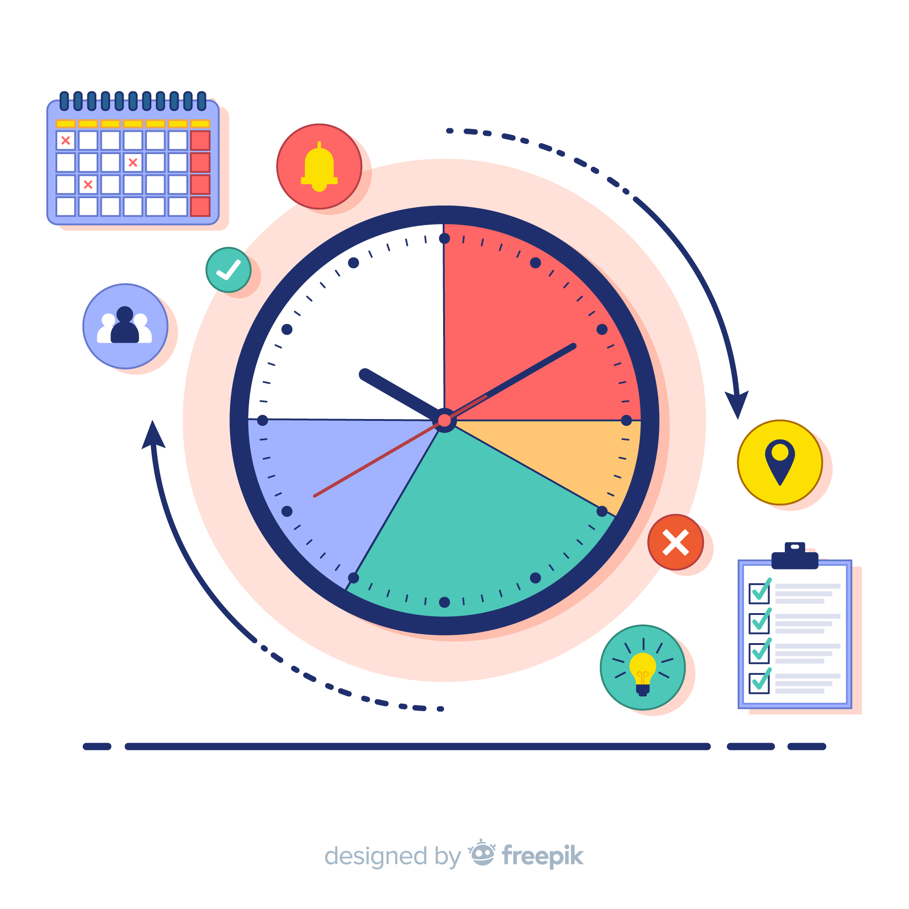

Detail Workshop

27 Januari 2025

08.00 - 10.00 WIB
08.00 - 10.00 WIB
 Malang Creative Center (MCC)
Malang Creative Center (MCC)
Seminar Cyber Security adalah sebuah pertemuan atau acara yang berfokus pada keamanan siber. Acara ini biasanya dihadiri oleh para ahli, praktisi, akademisi, dan pemangku kepentingan lainnya yang memiliki minat dalam melindungi sistem komputer, jaringan, dan data dari ancaman siber yang semakin kompleks.
Onno W. Purbo
Malang Creative Center (MCC)
Materi ini membahas konsep fundamental keamanan siber, termasuk pentingnya melindungi sistem, jaringan, dan data dari ancaman digital. Peserta akan mempelajari jenis-jenis ancaman seperti malware, phishing, ransomware, dan serangan DDoS.

Materi ini berfokus pada identifikasi dan mitigasi ancaman yang mengganggu operasional organisasi. Akan diajarkan cara penilaian risiko, mengembangkan strategi mitigasi, dan menyusun rencana darurat untuk mengatasi serangan siber.
Materi ini membahasa cara melindungi data pribadi dan sensitif dari penyalahgunaan. Peserta akan diajak memahami regulasi seperti GDPR atau UU Perlindungan Data Pribadi, serta teknik perlindungan data seperti enkripsi dan komunikasi online.
Materi ini peserta akan diajak untuk mengeksplorasi perkembangan terbaru dalam keamanan siber, seperti penerapan Artificial Intelligence (AI) dan Machine Learning untuk mendeteksi ancaman secara proaktif.